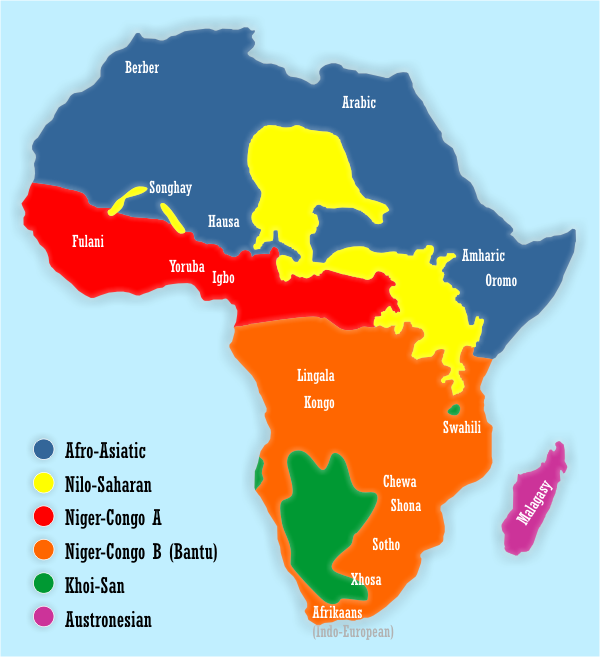

My goal is to create a geo mapping of the African continent and gather data on the different languages that are spoken through out the nation. So when you hover over each country you'll be able to see the population of the country and the primary language for that country along with a percentage of how much of that nation speaks the primary language. I would like to use a legend to show the 6 different language families each languages belong to.
Project by: Danay Weldegabriel & Aaron Steele
Emails: dweldega@ucsc.edu, atsteele@ucsc.edu